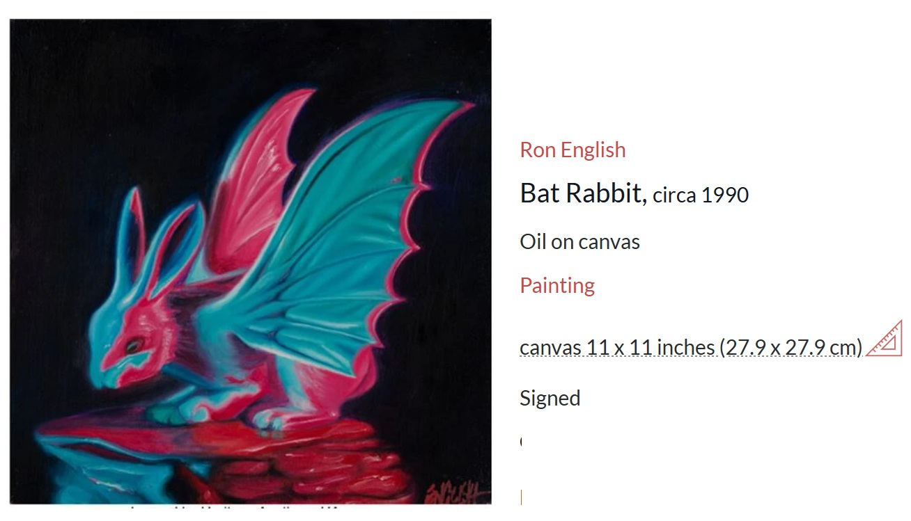
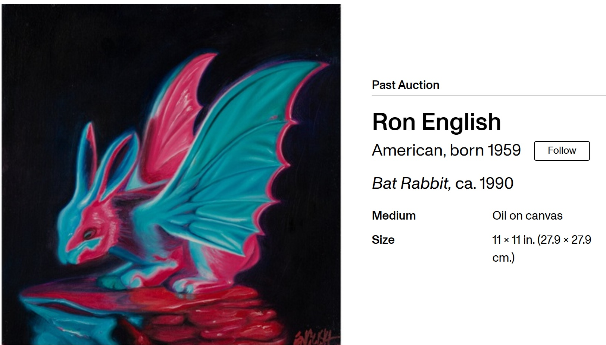

Literature
Ron English, Popaganda: The Art & Subversion of Ron English (San Francisco: Last Gasp, 2001), p. 119. ISBN 1-887128-60-3.
Notes
Also known as Bat Rabbit.

Ancillary Documentation



Ron English, Popaganda: The Art & Subversion of Ron English (San Francisco: Last Gasp, 2001), p. 119. ISBN 1-887128-60-3.
Also known as Bat Rabbit.

